,1;
,1;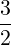
;−1)| Up | Next | Tail |
This section describes part of REDUCE’s definite integration package that is able to calculate the definite integrals of many functions, including several special functions. There are other parts of this package, such as Stan Kameny’s code for contour integration, that are not included here. The integration process described here is not the more normal approach of initially calculating the indefinite integral, but is instead the rather unusual idea of representing each function as a Meijer G-function (a formal definition of the Meijer G-function can be found in [PBM89]), and then calculating the integral by using the following Meijer G integration formula.
|
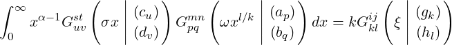 | (D.1) |
The resulting Meijer G-function is then retransformed, either directly or via a hypergeometric function simplification, to give the answer. A more detailed account of this theory can be found in [AM90].
As an example, if one wishes to calculate the following integral
| ∫ 0∞x−1e−x sin(x)dx |
then initially the correct Meijer G-functions are found, via a pattern matching process, and are substituted into eq. D.1 to give
|
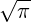 ∫ 0∞x−1G 0110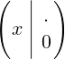 G0210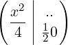 dx |
The cases for validity of the integral are then checked. If these are found to be satisfactory then the formula is calculated and we obtain the following Meijer G-function
|
G2212 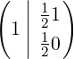 |
This is reduced to the following hypergeometric function
|
2F1(,1;  ;−1) |
which is then calculated to give the correct answer of
|
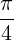 |
The above formula (D.1) is also true for the integration of a single Meijer G-function by replacing the second Meijer G-function with a trivial Meijer G-function.
A list of numerous particular Meijer G-functions is available in [PBM89].
Although the description so far has been limited to the computation of definite integrals between 0 and infinity, it can also be extended to calculate integrals between 0 and some specific upper bound, and by further extension, integrals between any two bounds. One approach is to use the Heaviside function, i.e.
| ∫ 0∞x2e−xH(1 − x)dx = ∫ 01x2e−xdx |
Another approach, again not involving the normal indefinite integration process, again uses Meijer G-functions, this time by means of the following formula
|
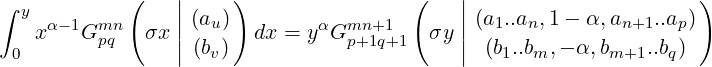 | (D.2) |
For a more detailed look at the theory behind this see [AM90].
For example, if one wishes to calculate the following integral
|
∫
0y sin(2 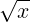 )dx |
then initially the correct Meijer G-function is found, by a pattern matching process, and is substituted into eq. D.2 to give
|
∫
0yG
0210 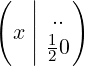 dx |
which then in turn gives
|
yG1311 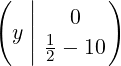 dx |
and returns the result
|
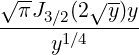 |
| ∫ 0∞e−xdx |
| ∫ 0∞xsin(1∕x)dx |
| ∫ 0∞x2 cos(x)e−2xdx |
| ∫ 0∞xe−1∕2xH(1 − x)dx = ∫ 01xe−1∕2xdx |
| ∫ 01xlog(1 + x)dx |
| ∫ 0y cos(2x)dx |
A useful application of the definite integration package is in the calculation of various integral transforms. The transforms available are as follows:
The Laplace transform
| f(s) = ℒ{F(t)} = ∫ 0∞e−stF(t)dt |
can be calculated by using the laplace_transform operator.
This requires as parameters
For example
| ℒ{e−at} |
is entered as
and returns the result
|
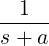 |
The Hankel transform
|
f(ω) = ∫
0∞F(t)J
ν(2 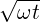 )dt |
can be calculated by using the hankel_transform operator, e.g.,
This is used in the same way as the laplace_transform operator.
The Y-transform
|
f(ω) = ∫
0∞F(t)Y
ν(2 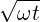 )dt |
can be calculated by using the Y_transform operator, e.g.,
This is used in the same way as the laplace_transform operator.
The K-transform
|
f(ω) = ∫
0∞F(t)K
ν(2 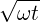 )dt |
can be calculated by using the K_transform operator, e.g.,
This is used in the same way as the laplace_transform operator.
The StruveH transform
|
f(ω) = ∫
0∞F(t)StruveH(ν,2 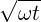 )dt |
can be calculated by using the struveh_transform operator, e.g.,
This is used in the same way as the laplace_transform operator.
The Fourier sine transform
| f(s) = ∫ 0∞F(t)sin(st)dt |
can be calculated by using the fourier_sin operator, e.g.,
This is used in the same way as the laplace_transform operator.
The Fourier cosine transform
| f(s) = ∫ 0∞F(t)cos(st)dt |
can be calculated by using the fourier_cos operator, e.g.,
This is used in the same way as the laplace_transform operator.
The required conditions for the validity of the transform integrals can be viewed using the following command:
For example after calculating the following laplace transform
using the print_conditions operator would produce
where
|
The relevant Meijer G representation for any function is found by a pattern-matching process which is carried out on a list of Meijer G-function definitions. This list, although extensive, can never hope to be complete and therefore the user may wish to add more definitions. Definitions can be added by adding the following lines:
where f(x) is the new function, i = 1,…,p, j = 1,…,q, C a constant, var = variable, n = an indexing number, where all expression must be in internal prefix form.
For example when considering cos(x) we have the Meijer G representation –
|
cosx = 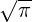 G0210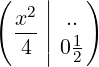 dx |
i.e. m = 1, n = 0, p = 0, q = 2, ai = {}, bj = {0,1∕2), C =
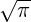
. The corresponding internal definite integration package representation iswhere 3 is the indexing number corresponding to the 3 in the following formula
or the more interesting example of the Bessel function Jn(x):
Meijer G representation –
|
Jn(x)G0210 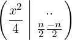 dx |
Internal definite integration package representation –
Kerry Gaskell would like to thank Victor Adamchik whose implementation of the definite integration package for REDUCE is vital to this interface.
| Up | Next | Front |